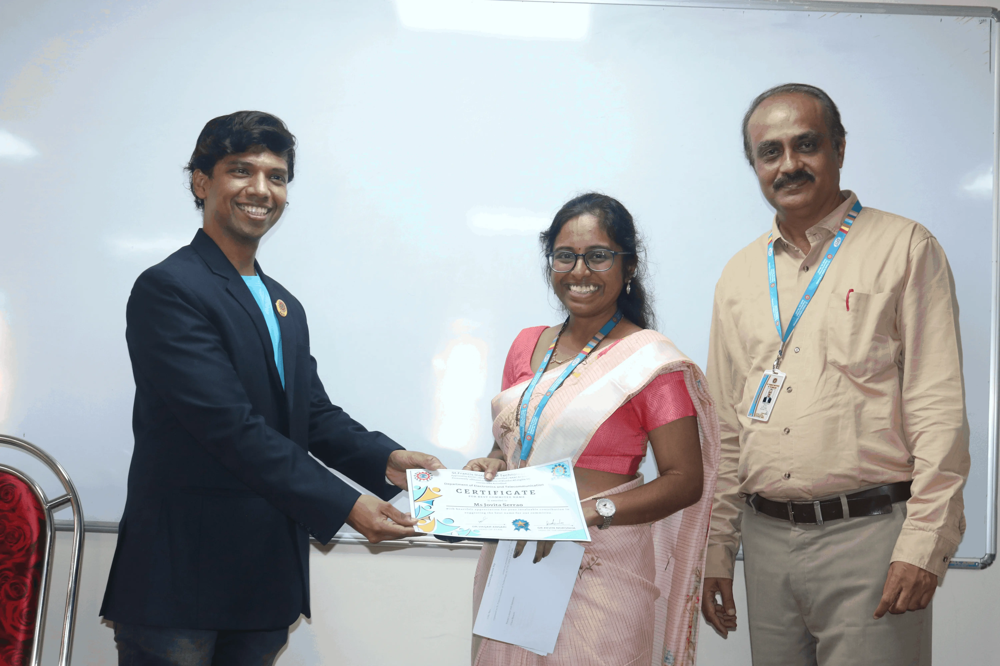
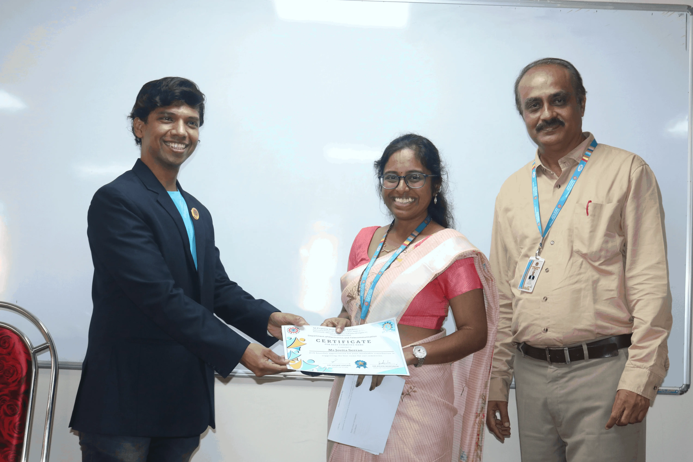
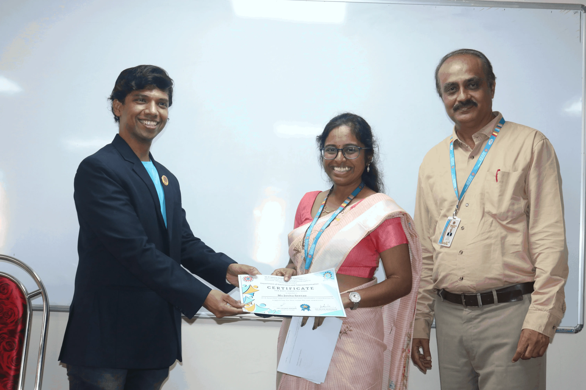

Gallery

 

E-TAN (EXTC's Tech Application Network) @ SFIT
EXTC's Tech Application Network, is a dynamic college committee at St. Francis Institute of Technology (SFIT)
dedicated to using technology for social causes. Our mission is to leverage technological advancements to address and
solve pressing social issues, creating a meaningful impact on our community and beyond.
At E-TAN, we believe in the power of innovation and collaboration. Our team is composed of passionate students and
professionals who are committed to bridging the gap between technology and social causes.
Through various projects,workshops,and initiatives, we aim:
1.Develop and implement tech-based solutions for social challenges.
2.Raise awareness about critical social issues through technology.
3.Foster a community of like-minded individuals dedicated to making a difference.
